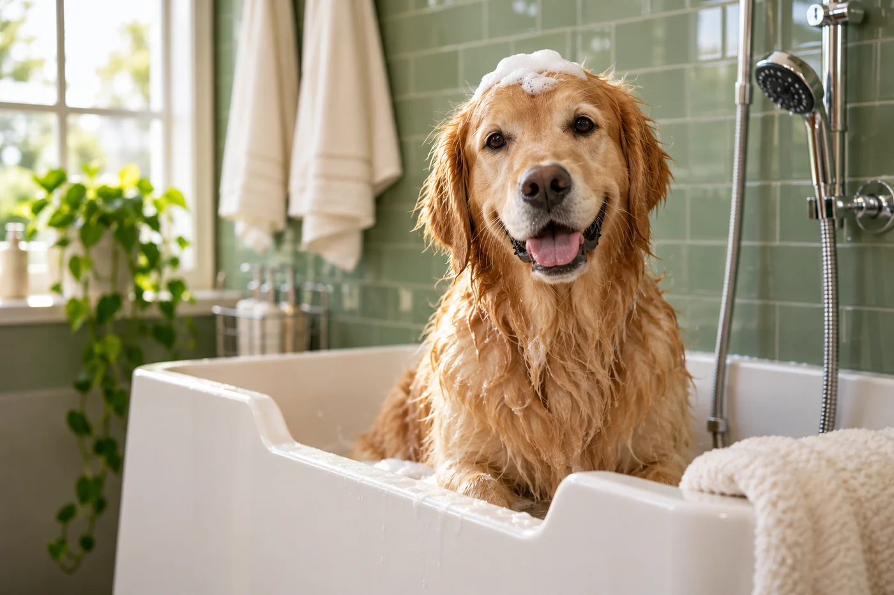

Handmade plushies & cozy crochet
Handmade plushies & cozy crochet01 / HANDMADE GOODS STOREFRONT
CC’s House
A playful home for handmade crochet. Explore the shop, individual hat pages, image galleries, and the brand’s story.
View websiteView the designs and try the interactions.
Handmade plushies & cozy crochet01 / HANDMADE GOODS STOREFRONT
A playful home for handmade crochet. Explore the shop, individual hat pages, image galleries, and the brand’s story.
View website
Good care. Happy tails.02 / PET-CARE CONCEPT
A friendly pet-care experience with grooming, self-service dog wash, and bath-time essentials. Try the sample booking flow and shopping bag.
View websiteFictional business. Sample appointments and products.